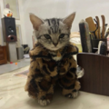

01
PROTOCOL · NO APP CODE
Overseer /overseer ↗
Tell it what you know about yourself, the people around you, and your work, then ask “what should I focus on this week?” and get an answer drawn from one graph of your goals, projects, and network.
Overseer is plain files plus one protocol (OVERSEER.md); Claude Code reads your corpus and folds it into a single graph of nodes and edges in brain/, with nothing to deploy and no schema to migrate. It never stores status; it records dated events and works out the current state when you ask. The index stays small and re-derivable, so a question costs about what it needs.
It pushes back: when what you say you want drifts from what your record shows, it says so.
Built by

191-iota